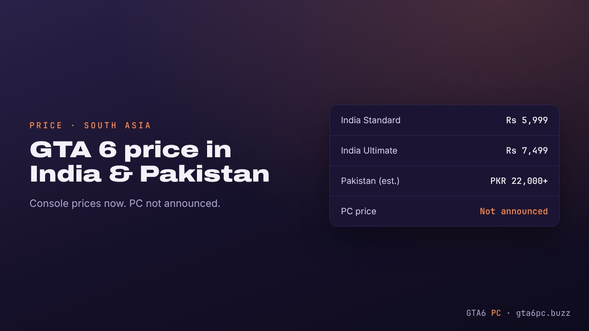

Guides & safety
How to play GTA 6 on PC today, avoiding scams and fake videos, price, stores and mods.

India & Pakistan priceGTA 6 Price in India and Pakistan: Console Prices and What PC Might Cost
GTA 6 costs Rs 5,999 (Standard) and Rs 7,499 (Ultimate) in India. Here's the Pakistan picture, console costs, and what the PC version might cost in South Asia.
 Remote Play lag fix
Remote Play lag fixGTA 6 Remote Play Lag on PC: 9 Fixes That Actually Help
Streaming GTA 6 from your PS5 or Xbox to a PC and getting lag or a blurry picture? Here are nine practical fixes, from wired connections to router settings.
 Play on PC now
Play on PC nowHow to Play GTA 6 on PC Right Now (Legally): Remote Play Explained
There's no GTA 6 PC version yet, but Rockstar confirmed Remote Play. If you own a PS5 or Xbox Series X|S, you can stream GTA 6 to your PC today. Here's how.
 PC price
PC priceGTA 6 PC Price: How Much Will It Cost? (Editions Explained)
GTA 6 costs $79.99 on PS5 and Xbox, with a $99.99 Ultimate Edition. Here's what that means for the PC price, and why you shouldn't buy PC keys yet.
 Scam warning
Scam warningFake GTA 6 PC Downloads: How to Spot the Scams and Stay Safe
There is no GTA 6 PC download. Fake installers, demos and ISOs are spreading infostealers and ransomware. Here's how to spot them and what to do if you clicked one.
 PC vs console
PC vs consoleGTA 6: Wait for PC or Play on PS5/Xbox Now?
GTA 6 is out on PS5 and Xbox, while PC is reportedly coming in early 2027. Here's how to decide whether to wait, based on what Rockstar's PC versions usually add.
 Mods & FiveM
Mods & FiveMGTA 6 PC Mods and FiveM Roleplay: What to Expect
Mods and roleplay servers kept GTA V alive on PC for over a decade. Rockstar bought the FiveM team in 2023. Here's what that could mean for GTA 6 on PC.
 On Steam?
On Steam?GTA 6 on Steam: A Suspicious App Page Appeared, But It Is Not Rockstar's Game
A Grand Theft Auto 6 page appeared on Steam around launch and was flagged as suspicious by SteamDB. Here is what the listing is, why it is not Rockstar's game, and how to tell a real Steam page from a fake one.
 Fake videos
Fake videosFake GTA 6 PC Videos: The GTA 5 Hoax and the RTX 5080 Clip
A viral GTA 6 PC port video turned out to be GTA V footage. Another claims 25 fps on an RTX 5080 and is unverified. Here are the three fakes doing the rounds and a checklist that catches all of them.
 GTA 6 on Deck?
GTA 6 on Deck?Can You Play GTA 6 on Steam Deck?
There is no native GTA 6 on Steam Deck because there is no PC version yet. Streaming from your own console works today, and GTA 5's history on Deck shows what to expect when the PC version arrives.